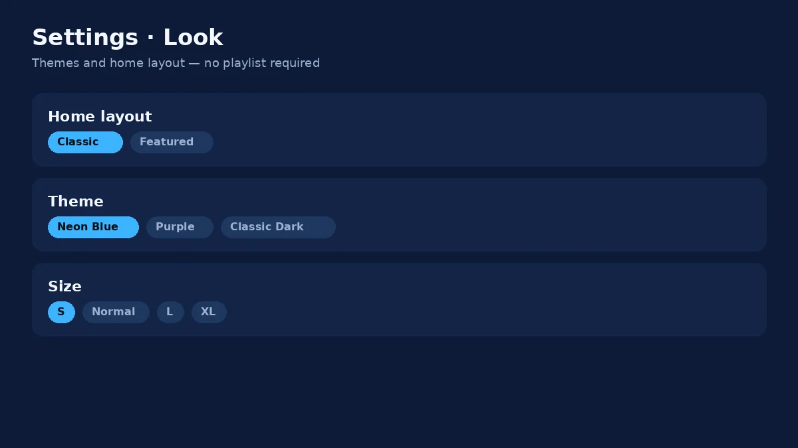
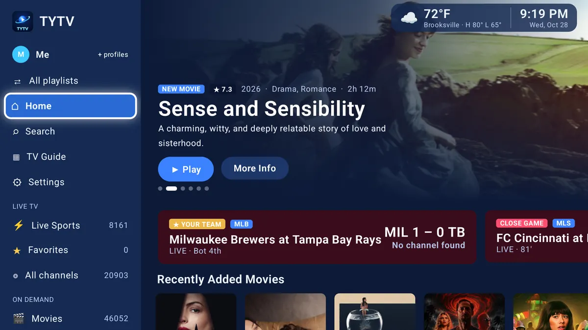

Free · Android TV · Onn · Fire TV Stick
Your TV. Your playlist.
One simple app.
TYTV is a playlist player for living-room TVs. Add your own M3U playlist and get a live TV guide, sports, movies and shows with posters, favorites, and profiles — built for a remote, not a phone.
Direct from GitHub Releases. No account required. You bring your own playlist — TYTV does not include any channels or movies.
Inside the app
-
TV Guide -

Settings · Look -

Home
Install in a few minutes
Pick your box. You’ll allow installs from unknown apps once, then open TYTV and add your playlist.
-
Allow unknown apps
Open Settings → Apps → Special app access → Install unknown apps. Choose your browser (Chrome or the built-in browser) and turn Allow from this source on.
-
Open this page on the TV
On the TV browser, go to this site and tap Download for Android TV. Or open the GitHub release and download
TYTV.apk. -
Install the APK
When the download finishes, open it and tap Install. If Play Protect warns you, choose Install anyway — the file is the official build from our GitHub release (check the SHA-256 above if you want).
-
Open TYTV and add your playlist
Launch TYTV from your apps row. Paste your M3U playlist URL or load a local file. Nothing is preloaded — you choose the playlist.
-
Install Downloader
On the Fire Stick, open the Amazon Appstore and install the free app Downloader by AFTVnews.
-
Allow unknown apps for Downloader
Go to Settings → My Fire TV → Developer options (or Apps → Manage Installed Applications). Turn on Apps from Unknown Sources for Downloader. Confirm the warning.
-
Enter the download address
Open Downloader. In the URL box, type this site’s address (once your custom domain is live), or paste:
https://github.com/smartaislemenu/tytv-app/releases/latest/download/TYTV.apkTap Go, then Install when the file finishes. Short path after deploy:
/apk. -
Open TYTV
Find TYTV under Your Apps. Add your own M3U playlist when prompted. Updates appear the next time you open the app after a new release is published.
Built for the 10-foot UI
Designed for a remote and a couch — big focus rings, clear rows, and posters you can read from across the room.
-
Live TV guide
Browse what’s on now and what’s next with a clear grid built for the remote.
-
Sports first
Jump straight into games and sports rows without digging through menus.
-
Movies & shows
Poster art for movies and series so you can spot what you want fast.
-
Favorites
Pin the channels and titles you actually watch.
-
Profiles
Separate profiles so each person keeps their own home layout and picks.
-
Your playlist
Works with your M3U playlist URL or file. TYTV is the player — you bring the content.
FAQ
Does TYTV include channels or movies?
No. TYTV is a playlist player. You add your own M3U playlist. We never ship channels, streams, or credentials with the app.
Is it free?
Yes. Download the APK from GitHub Releases at no charge. Optional tips or future store listings don’t change that the APK here is free.
Will Google Play Protect or Amazon warn me?
Sometimes. Sideloaded apps often get a warning. That’s normal. Verify the SHA-256 on this page matches the release notes, then choose Install anyway / Install.
How do updates work?
New versions are published on GitHub Releases. Open TYTV on the box and it can pick up the update, or download the latest APK from this page again.
iPhone / iPad?
This download is for Android TV devices (Onn, Google TV, Fire TV Stick). The iPhone app is separate and distributed through TestFlight / the App Store when available.
Can I use it without a playlist?
You need an M3U playlist to watch anything. The app will open and guide you to add one.